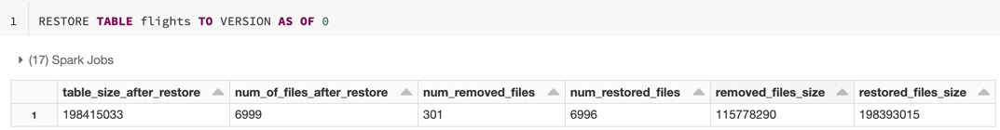

Work with Delta Lake table history
Each operation that modifies a Delta Lake table creates a new table version. You can use history information to audit operations, rollback a table, or query a table at a specific point in time using time travel.
Note
Databricks does not recommend using Delta Lake table history as a long-term backup solution for data archival. Databricks recommends using only the past 7 days for time travel operations unless you have set both data and log retention configurations to a larger value.
Retrieve Delta table history
You can retrieve information including the operations, user, and timestamp for each write to a Delta table by running the history command. The operations are returned in reverse chronological order.
Table history retention is determined by the table setting delta.logRetentionDuration, which is 30 days by default.
Note
Time travel and table history are controlled by different retention thresholds. See What is Delta Lake time travel?.
DESCRIBE HISTORY '/data/events/' -- get the full history of the table
DESCRIBE HISTORY delta.`/data/events/`
DESCRIBE HISTORY '/data/events/' LIMIT 1 -- get the last operation only
DESCRIBE HISTORY eventsTable
For Spark SQL syntax details, see DESCRIBE HISTORY.
See the Delta Lake API documentation for Scala/Java/Python syntax details.
Catalog Explorer provides a visual view of this detailed table information and history for Delta tables. In addition to the table schema and sample data, you can click the History tab to see the table history that displays with DESCRIBE HISTORY.
History schema
The output of the history operation has the following columns.
Column |
Type |
Description |
|---|---|---|
version |
long |
Table version generated by the operation. |
timestamp |
timestamp |
When this version was committed. |
userId |
string |
ID of the user that ran the operation. |
userName |
string |
Name of the user that ran the operation. |
operation |
string |
Name of the operation. |
operationParameters |
map |
Parameters of the operation (for example, predicates.) |
job |
struct |
Details of the job that ran the operation. |
notebook |
struct |
Details of notebook from which the operation was run. |
clusterId |
string |
ID of the cluster on which the operation ran. |
readVersion |
long |
Version of the table that was read to perform the write operation. |
isolationLevel |
string |
Isolation level used for this operation. |
isBlindAppend |
boolean |
Whether this operation appended data. |
operationMetrics |
map |
Metrics of the operation (for example, number of rows and files modified.) |
userMetadata |
string |
User-defined commit metadata if it was specified |
+-------+-------------------+------+--------+---------+--------------------+----+--------+---------+-----------+-----------------+-------------+--------------------+
|version| timestamp|userId|userName|operation| operationParameters| job|notebook|clusterId|readVersion| isolationLevel|isBlindAppend| operationMetrics|
+-------+-------------------+------+--------+---------+--------------------+----+--------+---------+-----------+-----------------+-------------+--------------------+
| 5|2019-07-29 14:07:47| ###| ###| DELETE|[predicate -> ["(...|null| ###| ###| 4|WriteSerializable| false|[numTotalRows -> ...|
| 4|2019-07-29 14:07:41| ###| ###| UPDATE|[predicate -> (id...|null| ###| ###| 3|WriteSerializable| false|[numTotalRows -> ...|
| 3|2019-07-29 14:07:29| ###| ###| DELETE|[predicate -> ["(...|null| ###| ###| 2|WriteSerializable| false|[numTotalRows -> ...|
| 2|2019-07-29 14:06:56| ###| ###| UPDATE|[predicate -> (id...|null| ###| ###| 1|WriteSerializable| false|[numTotalRows -> ...|
| 1|2019-07-29 14:04:31| ###| ###| DELETE|[predicate -> ["(...|null| ###| ###| 0|WriteSerializable| false|[numTotalRows -> ...|
| 0|2019-07-29 14:01:40| ###| ###| WRITE|[mode -> ErrorIfE...|null| ###| ###| null|WriteSerializable| true|[numFiles -> 2, n...|
+-------+-------------------+------+--------+---------+--------------------+----+--------+---------+-----------+-----------------+-------------+--------------------+
Note
A few of the other columns are not available if you write into a Delta table using the following methods:
Columns added in the future will always be added after the last column.
Operation metrics keys
The history operation returns a collection of operations metrics in the operationMetrics column map.
The following tables list the map key definitions by operation.
Operation |
Metric name |
Description |
|---|---|---|
WRITE, CREATE TABLE AS SELECT, REPLACE TABLE AS SELECT, COPY INTO |
||
numFiles |
Number of files written. |
|
numOutputBytes |
Size in bytes of the written contents. |
|
numOutputRows |
Number of rows written. |
|
STREAMING UPDATE |
||
numAddedFiles |
Number of files added. |
|
numRemovedFiles |
Number of files removed. |
|
numOutputRows |
Number of rows written. |
|
numOutputBytes |
Size of write in bytes. |
|
DELETE |
||
numAddedFiles |
Number of files added. Not provided when partitions of the table are deleted. |
|
numRemovedFiles |
Number of files removed. |
|
numDeletedRows |
Number of rows removed. Not provided when partitions of the table are deleted. |
|
numCopiedRows |
Number of rows copied in the process of deleting files. |
|
executionTimeMs |
Time taken to execute the entire operation. |
|
scanTimeMs |
Time taken to scan the files for matches. |
|
rewriteTimeMs |
Time taken to rewrite the matched files. |
|
TRUNCATE |
||
numRemovedFiles |
Number of files removed. |
|
executionTimeMs |
Time taken to execute the entire operation. |
|
MERGE |
||
numSourceRows |
Number of rows in the source DataFrame. |
|
numTargetRowsInserted |
Number of rows inserted into the target table. |
|
numTargetRowsUpdated |
Number of rows updated in the target table. |
|
numTargetRowsDeleted |
Number of rows deleted in the target table. |
|
numTargetRowsCopied |
Number of target rows copied. |
|
numOutputRows |
Total number of rows written out. |
|
numTargetFilesAdded |
Number of files added to the sink(target). |
|
numTargetFilesRemoved |
Number of files removed from the sink(target). |
|
executionTimeMs |
Time taken to execute the entire operation. |
|
scanTimeMs |
Time taken to scan the files for matches. |
|
rewriteTimeMs |
Time taken to rewrite the matched files. |
|
UPDATE |
||
numAddedFiles |
Number of files added. |
|
numRemovedFiles |
Number of files removed. |
|
numUpdatedRows |
Number of rows updated. |
|
numCopiedRows |
Number of rows just copied over in the process of updating files. |
|
executionTimeMs |
Time taken to execute the entire operation. |
|
scanTimeMs |
Time taken to scan the files for matches. |
|
rewriteTimeMs |
Time taken to rewrite the matched files. |
|
FSCK |
numRemovedFiles |
Number of files removed. |
CONVERT |
numConvertedFiles |
Number of Parquet files that have been converted. |
OPTIMIZE |
||
numAddedFiles |
Number of files added. |
|
numRemovedFiles |
Number of files optimized. |
|
numAddedBytes |
Number of bytes added after the table was optimized. |
|
numRemovedBytes |
Number of bytes removed. |
|
minFileSize |
Size of the smallest file after the table was optimized. |
|
p25FileSize |
Size of the 25th percentile file after the table was optimized. |
|
p50FileSize |
Median file size after the table was optimized. |
|
p75FileSize |
Size of the 75th percentile file after the table was optimized. |
|
maxFileSize |
Size of the largest file after the table was optimized. |
|
CLONE |
||
sourceTableSize |
Size in bytes of the source table at the version that’s cloned. |
|
sourceNumOfFiles |
Number of files in the source table at the version that’s cloned. |
|
numRemovedFiles |
Number of files removed from the target table if a previous Delta table was replaced. |
|
removedFilesSize |
Total size in bytes of the files removed from the target table if a previous Delta table was replaced. |
|
numCopiedFiles |
Number of files that were copied over to the new location. 0 for shallow clones. |
|
copiedFilesSize |
Total size in bytes of the files that were copied over to the new location. 0 for shallow clones. |
|
RESTORE |
||
tableSizeAfterRestore |
Table size in bytes after restore. |
|
numOfFilesAfterRestore |
Number of files in the table after restore. |
|
numRemovedFiles |
Number of files removed by the restore operation. |
|
numRestoredFiles |
Number of files that were added as a result of the restore. |
|
removedFilesSize |
Size in bytes of files removed by the restore. |
|
restoredFilesSize |
Size in bytes of files added by the restore. |
|
VACUUM |
||
numDeletedFiles |
Number of deleted files. |
|
numVacuumedDirectories |
Number of vacuumed directories. |
|
numFilesToDelete |
Number of files to delete. |
What is Delta Lake time travel?
Delta Lake time travel supports querying previous table versions based on timestamp or table version (as recorded in the transaction log). You can use time travel for applications such as the following:
Re-creating analyses, reports, or outputs (for example, the output of a machine learning model). This could be useful for debugging or auditing, especially in regulated industries.
Writing complex temporal queries.
Fixing mistakes in your data.
Providing snapshot isolation for a set of queries for fast changing tables.
Important
Table versions accessible with time travel are determined by a combination of the retention threshold for transaction log files and the frequency and specified retention for VACUUM operations. If you run VACUUM daily with the default values, 7 days of data is available for time travel.
Delta time travel syntax
You query a Delta table with time travel by adding a clause after the table name specification.
timestamp_expressioncan be any one of:'2018-10-18T22:15:12.013Z', that is, a string that can be cast to a timestampcast('2018-10-18 13:36:32 CEST' as timestamp)'2018-10-18', that is, a date stringcurrent_timestamp() - interval 12 hoursdate_sub(current_date(), 1)Any other expression that is or can be cast to a timestamp
versionis a long value that can be obtained from the output ofDESCRIBE HISTORY table_spec.
Neither timestamp_expression nor version can be subqueries.
Only date or timestamp strings are accepted. For example, "2019-01-01" and "2019-01-01T00:00:00.000Z". See the following code for example syntax:
SELECT * FROM people10m TIMESTAMP AS OF '2018-10-18T22:15:12.013Z'
SELECT * FROM delta.`/tmp/delta/people10m` VERSION AS OF 123
df1 = spark.read.option("timestampAsOf", "2019-01-01").table("people10m")
df2 = spark.read.option("versionAsOf", 123).load("/tmp/delta/people10m")
You can also use the @ syntax to specify the timestamp or version as part of the table name. The timestamp must be in yyyyMMddHHmmssSSS format. You can specify a version after @ by prepending a v to the version. See the following code for example syntax:
SELECT * FROM people10m@20190101000000000
SELECT * FROM people10m@v123
spark.read.table("people10m@20190101000000000")
spark.read.table("people10m@v123")
spark.read.load("/tmp/delta/people10m@20190101000000000")
spark.read.load("/tmp/delta/people10m@v123")
What are transaction log checkpoints?
Delta Lake records table versions as JSON files within the _delta_log directory, which is stored alongside table data. To optimize checkpoint querying, Delta Lake aggregates table versions to Parquet checkpoint files, preventing the need to read all JSON versions of table history. Databricks optimizes checkpointing frequency for data size and workload. Users should not need to interact with checkpoints directly. The checkpoint frequency is subject to change without notice.
Configure data retention for time travel queries
To query a previous table version, you must retain both the log and the data files for that version.
Data files are deleted when VACUUM runs against a table. Delta Lake manages log file removal automatically after checkpointing table versions.
Because most Delta tables have VACUUM run against them regularly, point-in-time queries should respect the retention threshold for VACUUM, which is 7 days by default.
In order to increase the data retention threshold for Delta tables, you must configure the following table properties:
delta.logRetentionDuration = "interval <interval>": controls how long the history for a table is kept. The default isinterval 30 days.delta.deletedFileRetentionDuration = "interval <interval>": determines the thresholdVACUUMuses to remove data files no longer referenced in the current table version. The default isinterval 7 days.
You can specify Delta properties during table creation or set them with an ALTER TABLE statement. See Delta table properties reference.
Note
You must set both of these properties to ensure table history is retained for longer duration for tables with frequent VACUUM operations. For example, to access 30 days of historical data, set delta.deletedFileRetentionDuration = "interval 30 days" (which matches the default setting for delta.logRetentionDuration).
Increasing data retention threshold can cause your storage costs to go up, as more data files are maintained.
Restore a Delta table to an earlier state
Note
Available in Databricks Runtime 7.4 and above.
You can restore a Delta table to its earlier state by using the RESTORE command. A Delta table internally maintains historic versions of the table that enable it to be restored to an earlier state.
A version corresponding to the earlier state or a timestamp of when the earlier state was created are supported as options by the RESTORE command.
Important
You can restore an already restored table.
You can restore a cloned table.
You must have
MODIFYpermission on the table being restored.You cannot restore a table to an older version where the data files were deleted manually or by
vacuum. Restoring to this version partially is still possible ifspark.sql.files.ignoreMissingFilesis set totrue.The timestamp format for restoring to an earlier state is
yyyy-MM-dd HH:mm:ss. Providing only a date(yyyy-MM-dd) string is also supported.
RESTORE TABLE db.target_table TO VERSION AS OF <version>
RESTORE TABLE delta.`/data/target/` TO TIMESTAMP AS OF <timestamp>
For syntax details, see RESTORE.
Important
Restore is considered a data-changing operation. Delta Lake log entries added by the RESTORE command contain dataChange set to true. If there is a downstream application, such as a Structured streaming job that processes the updates to a Delta Lake table, the data change log entries added by the restore operation are considered as new data updates, and processing them may result in duplicate data.
For example:
Table version |
Operation |
Delta log updates |
Records in data change log updates |
|---|---|---|---|
0 |
INSERT |
AddFile(/path/to/file-1, dataChange = true) |
(name = Viktor, age = 29, (name = George, age = 55) |
1 |
INSERT |
AddFile(/path/to/file-2, dataChange = true) |
(name = George, age = 39) |
2 |
OPTIMIZE |
AddFile(/path/to/file-3, dataChange = false), RemoveFile(/path/to/file-1), RemoveFile(/path/to/file-2) |
(No records as Optimize compaction does not change the data in the table) |
3 |
RESTORE(version=1) |
RemoveFile(/path/to/file-3), AddFile(/path/to/file-1, dataChange = true), AddFile(/path/to/file-2, dataChange = true) |
(name = Viktor, age = 29), (name = George, age = 55), (name = George, age = 39) |
In the preceding example, the RESTORE command results in updates that were already seen when reading the Delta table version 0 and 1. If a streaming query was reading this table, then these files will be considered as newly added data and will be processed again.
Restore metrics
RESTORE reports the following metrics as a single row DataFrame once the operation is complete:
table_size_after_restore: The size of the table after restoring.num_of_files_after_restore: The number of files in the table after restoring.num_removed_files: Number of files removed (logically deleted) from the table.num_restored_files: Number of files restored due to rolling back.removed_files_size: Total size in bytes of the files that are removed from the table.restored_files_size: Total size in bytes of the files that are restored.
Examples of using Delta Lake time travel
Fix accidental deletes to a table for the user
111:INSERT INTO my_table SELECT * FROM my_table TIMESTAMP AS OF date_sub(current_date(), 1) WHERE userId = 111
Fix accidental incorrect updates to a table:
MERGE INTO my_table target USING my_table TIMESTAMP AS OF date_sub(current_date(), 1) source ON source.userId = target.userId WHEN MATCHED THEN UPDATE SET *
Query the number of new customers added over the last week.
SELECT count(distinct userId) FROM my_table - ( SELECT count(distinct userId) FROM my_table TIMESTAMP AS OF date_sub(current_date(), 7))
How do I find the last commit’s version in the Spark session?
To get the version number of the last commit written by the current SparkSession across all threads
and all tables, query the SQL configuration spark.databricks.delta.lastCommitVersionInSession.
SET spark.databricks.delta.lastCommitVersionInSession
spark.conf.get("spark.databricks.delta.lastCommitVersionInSession")
spark.conf.get("spark.databricks.delta.lastCommitVersionInSession")
If no commits have been made by the SparkSession, querying the key returns an empty value.
Note
If you share the same SparkSession across multiple threads, it’s similar to sharing a variable
across multiple threads; you may hit race conditions as the configuration value is updated
concurrently.